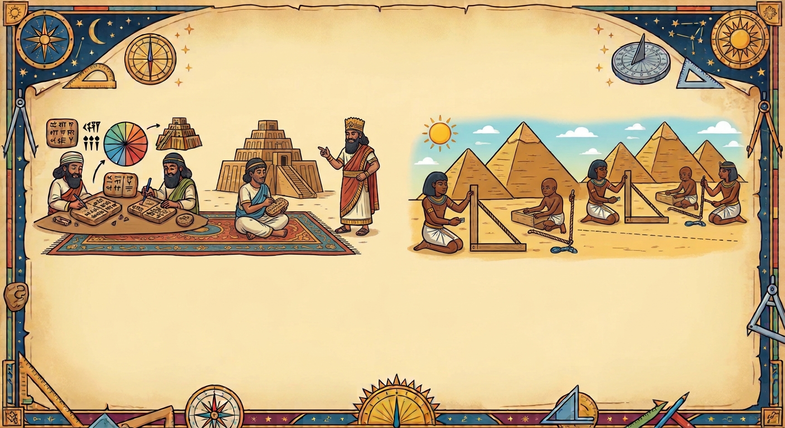

Como surgiu?
Que tal conhecer um pouco da história do ângulo e assim, entender como este conceito está presente no seu cotidiano?

📺Assista ao vídeo abaixo para entender melhor essa história fascinante:
Verdadeiro ou Falso
Baseado no vídeo que você acabou de assistir, responda as perguntas a seguir:
Tempo por pergunta:
00:00: